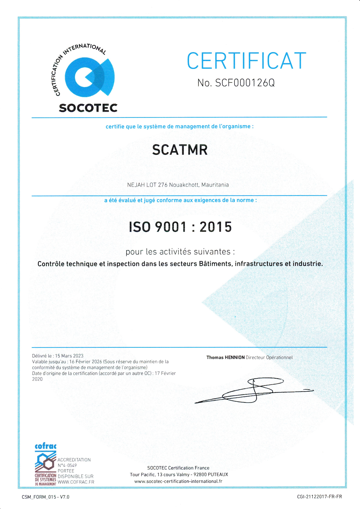

L’objet de la SCAT Internationale S.A. garantit un jugement technique libre de toute pression commerciale ou financière.
Nos experts interviennent dans divers secteurs, notamment la construction et l’assistance technique.
Nous collaborons avec des organismes internationaux pour le contrôle technique, la formation et l’accompagnement.
Nous sommes très heureux de vous accueillir sur le site de notre société SCAT MR. Notre objectif est de vous aider à prévenir les risques techniques et à répondre à vos enjeux réglementaires.
Lire le mot completSCAT MR s'engage à améliorer continuellement son système de management de la qualité conformément à la norme ISO 9001:2015.
Lire la politique complète
Adresse: TV-ZEINA, 276, Lot. NAJAH, Nouakchott
Téléphone: 46 57 88 23
Email: scatmr2019@gmail.com